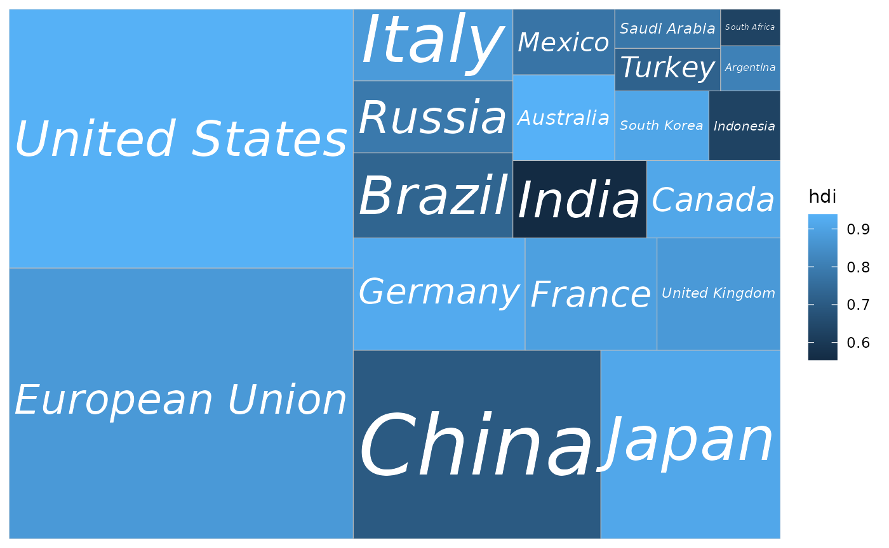
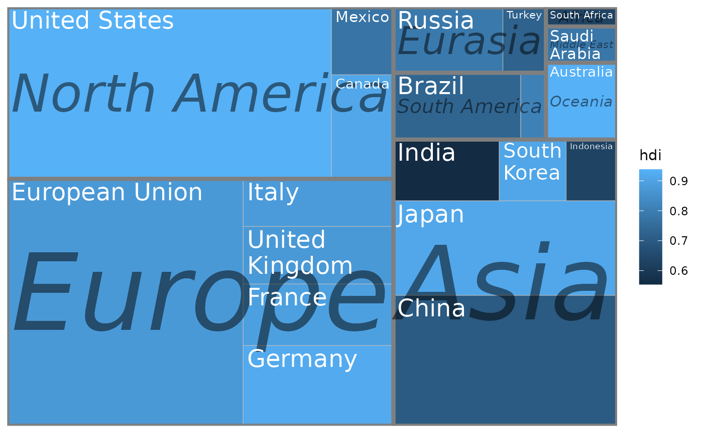

Introduction to 'treemapify'
David Wilkins
2025-12-15
Source:vignettes/introduction-to-treemapify.Rmd
introduction-to-treemapify.RmdThe G20 dataset
‘treemapify’ includes an example dataset containing statistics about the G-20 group of major world economies.
library(ggplot2)
library(treemapify)
G20## region country gdp_mil_usd hdi econ_classification
## 1 Africa South Africa 384315 0.629 Developing
## 2 North America United States 15684750 0.937 Advanced
## 3 North America Canada 1819081 0.911 Advanced
## 4 North America Mexico 1177116 0.775 Developing
## 5 South America Brazil 2395968 0.730 Developing
## 6 South America Argentina 474954 0.811 Developing
## 7 Asia China 8227037 0.699 Developing
## 8 Asia Japan 5963969 0.912 Advanced
## 9 Asia South Korea 1155872 0.909 Advanced
## 10 Asia India 1824832 0.554 Developing
## 11 Asia Indonesia 878198 0.629 Developing
## 12 Eurasia Russia 2021960 0.788 Developing
## 13 Eurasia Turkey 794468 0.722 Developing
## 14 Europe European Union 16414483 0.876 Advanced
## 15 Europe Germany 3400579 0.920 Advanced
## 16 Europe France 2608699 0.893 Advanced
## 17 Europe United Kingdom 2440505 0.875 Advanced
## 18 Europe Italy 2014079 0.881 Advanced
## 19 Middle East Saudi Arabia 727307 0.782 Developing
## 20 Oceania Australia 1541797 0.938 Advanced
## hemisphere
## 1 Southern
## 2 Northern
## 3 Northern
## 4 Northern
## 5 Southern
## 6 Southern
## 7 Northern
## 8 Northern
## 9 Northern
## 10 Northern
## 11 Southern
## 12 Northern
## 13 Northern
## 14 Northern
## 15 Northern
## 16 Northern
## 17 Northern
## 18 Northern
## 19 Northern
## 20 SouthernDrawing a simple treemap
In a treemap, each tile represents a single observation, with the
area of the tile proportional to a variable. Let’s start by drawing a
treemap with each tile representing a G-20 country. The area of the tile
will be mapped to the country’s GDP, and the tile’s fill colour mapped
to its HDI (Human Development Index). geom_treemap() is the
basic geom for this purpose.
ggplot(G20, aes(area = gdp_mil_usd, fill = hdi)) +
geom_treemap()
This plot isn’t very useful without the knowing what country is
represented by each tile. geom_treemap_text() can be used
to add a text label to each tile. It uses the ‘ggfittext’ package to
resize the text so it fits the tile. In addition to standard text
formatting aesthetics you would use in geom_text(), like
fontface or colour, we can pass additional
options specific for ‘ggfittext’. For example, we can place the text in
the centre of the tile with place = "centre", and expand it
to fill as much of the tile as possible with
grow = TRUE.
ggplot(G20, aes(area = gdp_mil_usd, fill = hdi, label = country)) +
geom_treemap() +
geom_treemap_text(fontface = "italic", colour = "white", place = "centre",
grow = TRUE)
Note that several tiles in the top right corner have no labels.
geom_treemap_text() will hide text labels that cannot fit a
tile without being shrunk below a minimum size, by default 4 points.
This can be adjusted with the min.size argument.
Subgrouping tiles
geom_treemap() supports subgrouping of tiles within a
treemap by passing a subgroup aesthetic. Let’s subgroup the
countries by region, draw a border around each subgroup with
geom_treemap_subgroup_border(), and label each subgroup
with geom_treemap_subgroup_text().
geom_treemap_subgroup_text() takes the same arguments for
text placement and resizing as geom_treemap_text().
ggplot(G20, aes(area = gdp_mil_usd, fill = hdi, label = country,
subgroup = region)) +
geom_treemap() +
geom_treemap_subgroup_border() +
geom_treemap_subgroup_text(place = "centre", grow = T, alpha = 0.5, colour =
"black", fontface = "italic", min.size = 0) +
geom_treemap_text(colour = "white", place = "topleft", reflow = T)
Up to three nested levels of subgrouping are supported with the
subgroup2 and subgroup3 aesthetics. Borders
and text labels for these subgroups can be drawn with
geom_treemap_subgroup2_border(), etc. Note that ‘ggplot2’
draws plot layers in the order that they are added. This means it is
possible to accidentally hide one layer of subgroup borders with
another. Usually, it’s best to add the border layers in order from
deepest to shallowest, i.e. geom_treemap_subgroup3_border()
then geom_treemap_subgroup2_border() then
geom_treemap_subgroup_border().
ggplot(G20, aes(area = 1, label = country, subgroup = hemisphere,
subgroup2 = region, subgroup3 = econ_classification)) +
geom_treemap() +
geom_treemap_subgroup3_border(colour = "blue", size = 1) +
geom_treemap_subgroup2_border(colour = "white", size = 3) +
geom_treemap_subgroup_border(colour = "red", size = 5) +
geom_treemap_subgroup_text(
place = "middle",
colour = "red",
alpha = 0.5,
grow = T
) +
geom_treemap_subgroup2_text(
colour = "white",
alpha = 0.5,
fontface = "italic"
) +
geom_treemap_subgroup3_text(place = "top", colour = "blue", alpha = 0.5) +
geom_treemap_text(colour = "white", place = "middle", reflow = T)
As demonstrated, there is no assurance that the resulting plot will look good.
Like any ‘ggplot2’ plot, ‘treemapify’ plots can be faceted, scaled, themed, etc.
Fixed layouts
The default algorithm for laying out the tiles is the ‘squarified’ algorithm. This tries to minimise the tiles’ aspect ratios, making sure there are no long and flat or tall and skinny tiles. While ‘squarified’ treemaps are aesthetically pleasing, the downside is that the position of tiles within the plot area can change dramatically with even small changes to the dataset. This makes it difficult to compare treemaps side-by-side, or create animated treemaps.
By providing the layout = "fixed" option to ‘treemapify’
geoms, an alternative layout algorithm is used that will always position
the tiles based on the order of observations in the data frame. It’s
very important that the same value for layout is passed to
all ‘treemapify’ geoms, otherwise different layers of the plot might not
share the same layout.